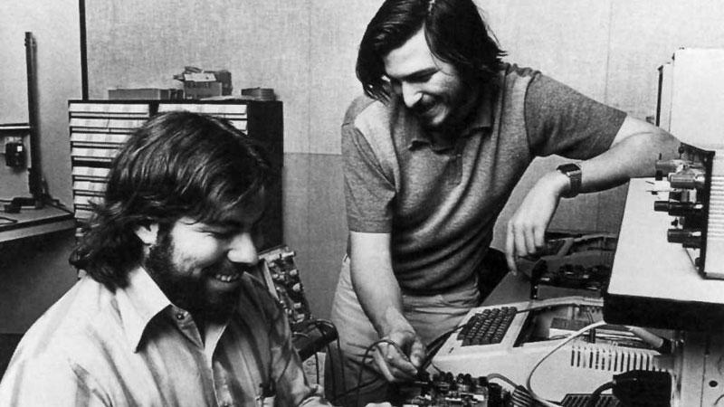

For more than three decades, Apple Computer was predominantly a manufacturer of personal computers, including the Apple II, Macintosh, and Power Mac lines, but it faced rocky sales and low market share during the 1990s. Jobs, who had been ousted from the company in 1985, returned to Apple in 1996 after his company NeXT was bought by Apple.[3] The following year he became the company's interim CEO,[4] which later became permanent.[5] Jobs subsequently instilled a new corporate philosophy of recognizable products and simple design, starting with the original iMac in 1998.
h the introduction of the successful iPod music player in 2001 and iTunes Music Store in 2003, Apple established itself as a leader in the consumer electronics and media sales industries, leading it to drop "Computer" from the company's name in 2007. The company is now also known for its iOS range of smart phone, media player, and tablet computer products that began with the iPhone, followed by the iPod Touch and then iPad. As of 30 June 2015, Apple was the largest publicly traded corporation in the world by market capitalization,[6] with an estimated value of US$530 billion as of February 2016. Apple's worldwide annual revenue in 2010 totaled US$65 billion, growing to US$127.8 billion in 2011[7] and $156 billion in 2012.
At the 1997 Macworld Expo, Steve Jobs announced that Apple would be entering into a partnership with Microsoft. Included in this was a five-year commitment from Microsoft to release Microsoft Office for Macintosh as well as a US$150 million investment in Apple. As part of the deal Apple and Microsoft agreed to settle a long-standing dispute over whether Microsoft's Windows operating system infringed on any of Apple's patents.[61] It was also announced that Internet Explorer would be shipped as the default browser on the Macintosh, with the user being able to have a preference. Microsoft chairman Bill Gates appeared at the expo on-screen, further explaining Microsoft's plans for the software they were developing for Mac, and stating that he was very excited to be helping Apple return to success.